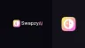
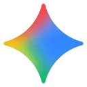

Подборки под ваши задачи
Готовые наборы инструментов: от первого изображения до рабочего проекта.
Видео для коротких публикаций
Для ролика из текста, монтажа готового видео и видео с аватаром нужны разные инструменты. Запишите исходные материалы, длительность и нужный формат экспорта.
 Смотреть подборку
Смотреть подборкуАнимация фото и замена лица
Анимация и замена лица требуют согласия на использование образа. Для проверки возьмите своё фото, где лицо хорошо видно.


Смотреть подборкуТексты, конспекты и документы
Для черновика текста, извлечения фактов из PDF и подготовки конспекта нужны разные проверки. Определите, должен ли ответ опираться только на документ.



Смотреть подборкуДиалоговые персонажи: возможности и ограничения
Персонаж может поддерживать сценарий общения, но его ответы генерируются моделью. Они не подтверждают личный опыт или квалификацию.
Презентации и работа с PDF
Слайды и ответы по PDF решают разные задачи. Сначала уточните, нужен ли редактор презентаций или поиск по загруженному файлу.
Озвучка, голоса и дубляж
Подготовьте короткий фрагмент с именами, числами и паузами. Для дубляжа дополнительно важна синхронизация с видео.


 Смотреть подборку
Смотреть подборкуДизайн, логотипы и изображения
Запишите размеры, цвета и назначение изображения. Растровая картинка, векторный знак и готовый макет требуют разных форматов.


 Смотреть подборку
Смотреть подборкуУчёба и работа с исследованиями
ИИ может объяснить термин, помочь разобрать статью или подготовить черновик. Список источников и выводы требуют самостоятельной проверки.

 Смотреть подборку
Смотреть подборкуНачните с одного вопроса по своему материалу
В Молекуле можно подготовить ответ по тексту, который вы уже используете в работе. Возьмите небольшой обезличенный отрывок, задайте конкретный вопрос и проверьте основание ответа в исходном документе.
Этапы выполнения
- Выберите небольшой актуальный фрагмент
- Уберите ненужные личные сведения
- Найдите основание ответа в исходнике
По этому фрагменту инструкции объясни, какие сведения нужны для принятия заявки. Приведи цитату-основание и список недостающих данных. Не добавляй цену, срок или условие, которого нет в тексте.